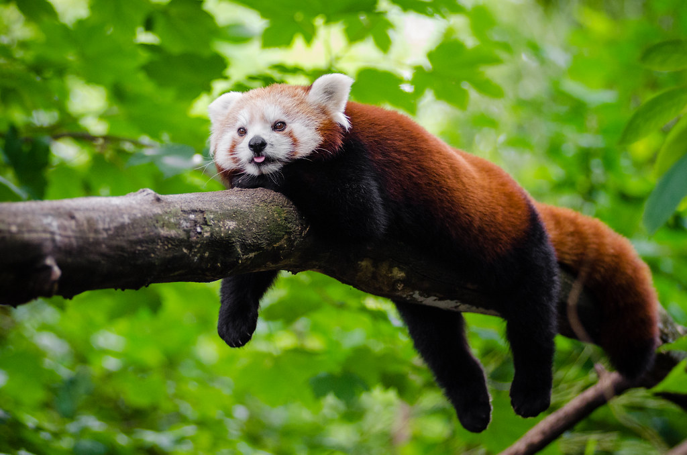

The red panda (Ailurus fulgens) is a mammal native to the eastern Himalayas and southwestern China. It is listed as Endangered on the IUCN Red List because the wild population is estimated at fewer than 10,000 mature individuals and continues to decline due to habitat loss and fragmentation, poaching, and inbreeding depression.[1]
The red panda has reddish-brown fur, a long, shaggy tail, and a waddling gait due to its shorter front legs; it is roughly the size of a domestic cat, though with a longer body and somewhat heavier. It is arboreal, feeds mainly on bamboo, but also eats eggs, birds, and insects. It is a solitary animal, mainly active from dusk to dawn, and is largely sedentary during the day. It is also called the lesser panda, the red bear-cat, and the red cat-bear.[4]
The red panda is the only living species of the genus Ailurus and the family Ailuridae. It has been previously placed in the raccoon and bear families, but the results of phylogenetic analysis provide strong support for its taxonomic classification in its own family, Ailuridae, which is part of the superfamily Musteloidea, along with the weasel, raccoon and skunk families.[5] Two subspecies are recognized.[3] It is not closely related to the giant panda, which is a basal ursid.[6]